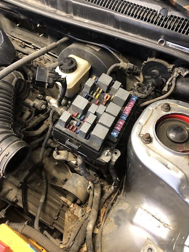
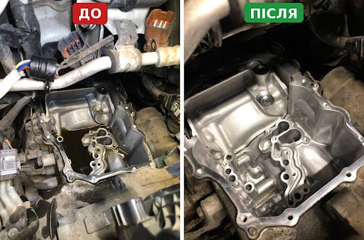
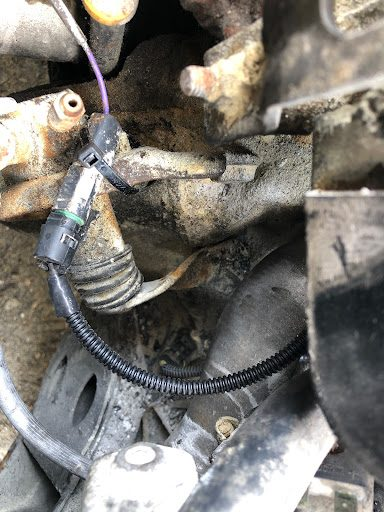
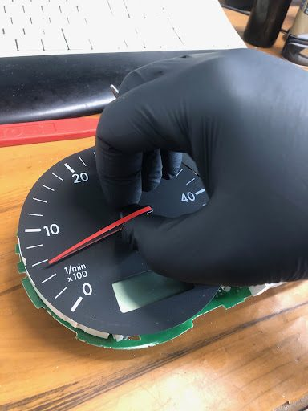
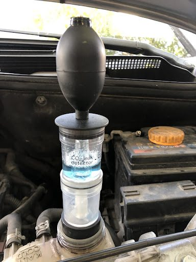
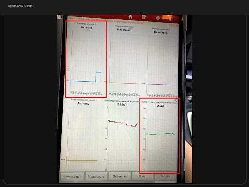
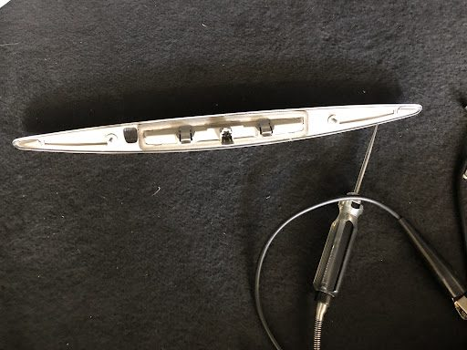
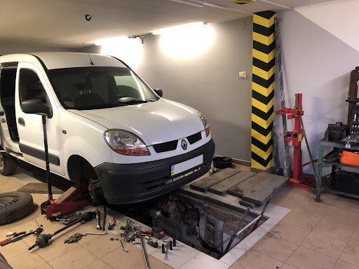
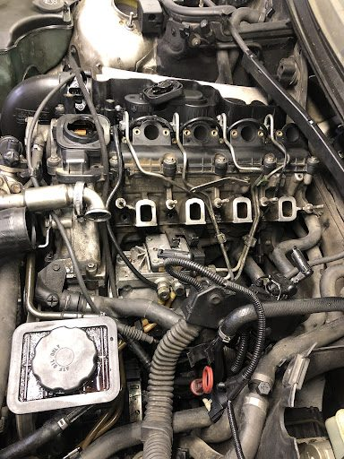

Наші роботи
Реальні випадки з майстерні: з чим приїхав автомобіль, як ми шукали причину і що зрештою виправили. Усе це пости з нашого профілю Google, зібрані в одному місці.

Kia Shuma II — періодично зникало ближнє та дальнє світло фар
До нашої майстерні звернувся власник Kia Shuma II зі скаргою на нестабільну роботу фар. Ближнє та дальнє світло могли раптово вимкнутися самостійно, а потім знову…
Читати повністю →
Власник автомобіля звернувся з проблемою, що на машині Peugeot 301 1.6л 2011 року…
Власник автомобіля звернувся з проблемою, що на машині Peugeot 301 1.6л 2011 року випуску, коробка автомат інколи переходить в аварійний режим і машина не розвиває…
Читати повністю →
Subaru XV — знайшли причину несправності варіатора
До майстерні звернувся власник Subaru XV 1,6л 2016 року з проблемою, яка проявлялася вже не один місяць. Спочатку несправність виникала періодично: на панелі приладів…
Читати повністю →
Відновлення проводки після пожежі — Daewoo Nexia
До нас потрапила Daewoo Nexia після пожежі в підкапотному просторі. Причиною став витік газу з редуктора газобалонного обладнання. Автомобіль після цього не запускався…
Читати повністю →
Успішний ремонт Porsche Boxster 987 — вода пошкодила блок керування
Клієнт звернувся з Porsche Boxster 987 через серйозні проблеми з кузовною електронікою: складний дах не реагував на кнопки керування, постійно світилися задні…
Читати повністю →
Успішний ремонт Volkswagen T4 — відновили роботу панелі приладів
До майстерні звернувся власник Volkswagen T4 2002 року: на панелі приладів перестали працювати індикатори температури охолоджувальної рідини та рівня палива. Під час…
Читати повністю →
Діагностика системи охолодження Opel Meriva-A 1.6 Z16XEP
До нас звернувся власник Opel Meriva-A 1.6 Z16XEP зі скаргою на витік охолоджуючої рідини через пробку розширювального бачка під час роботи двигуна. За побажанням…
Читати повністю →
Діагностика системи охолодження Opel Meriva-A 1.6 Z16XEP
Провели діагностику системи керування вентилятором охолодження на Opel Meriva-A 1.6 Z16XEP за допомогою професійного діагностичного обладнання. Під час перевірки були…
Читати повністю →
Honda CR-V 2015р
Клієнт звернувся з проблемою, що не працює додатковий ліхтар стоп-сигналу на кришці багажника. Була проведена діагностика та перевірка проводки до ліхтаря та самого…
Читати повністю →
Обслуговування Renault Kangoo 1.5 dCi
Була виконана діагностика та ремонт ходової частини. Була замінена кермова рейка, шарові опори, рульові накінечники, пильники наружніх ШРУСів та ремкомплект куліси…
Читати повністю →
Машина потрапила до нас на діагностику з проблемою, що двигун не запускався, помилок в блоці керування не було
В результаті діагностики було виявлено, що провернулась шестерня на ПНВТ Bosch VP44 і відповідно збився початковий кут впорскування. Було здійснено демонтаж ПНВТ та…
Читати повністю →